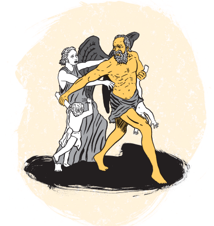

Según la mitología griega, el universo existió antes que los dioses: del cielo (Urano) y la Tierra (Gea) nacieron los titanes, los Cíclopes y los Hecatónquiros. Entre los titanes más conocidos están Océano, Hiperión, Jápeto, Mnemosina, Temis, Tetis y Cronos, el más joven. Urano, temiendo a sus hijos, los encerró en el Tártaro, lo que llevó a Gea a pedir ayuda a Cronos. Este derrotó y mutiló a su padre, tomando su lugar como soberano. Sin embargo, Urano le profetizó que sería destronado por uno de sus hijos. Por miedo a esa profecía, Cronos devoraba a sus hijos con Rea al nacer. Pero Rea logró salvar a Zeus, engañando a Cronos con una piedra envuelta. Ya adulto, Zeus hizo que su padre vomitara a sus hermanos y le declaró la guerra, venciéndolo y desterrándolo. Cronos huyó a Italia, donde fue conocido como Saturno.
